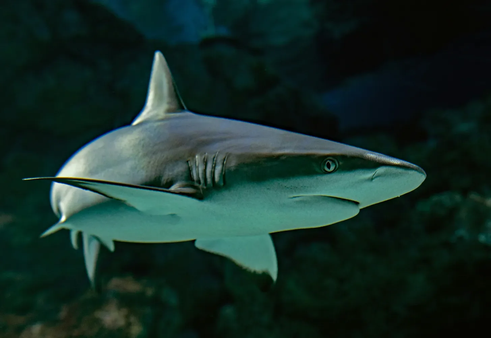

“알리야, 진정해! 내가 잡고 있어.” 라스의 목소리는 보통 때는 차분한 멜로디 같았지만, 지금은 걱정으로 가득 차 있었다. 그의 손이 그녀의 손을 꽉 잡았고, 그것은 광활한 청록색 바다에서 하나의 생명줄 같았다. 알리야는 가쁘게 숨을 헐떡이며 그에게 매달렸다. 그녀는 이것이 싫었다. 발밑에 아무것도 없는 느낌, 사방에서 밀려오는 보이지 않는 깊이. 이 낙원이라고 불리는 이 목가적인 섬은 어느새 물 속 무덤처럼 느껴졌다. “그냥 떠 있으려고 노력해 봐.” 라스가 재촉했고, 그의 푸른 눈은 그녀의 눈을 들여다보며 평온함을 찾고 있었다. “날 믿지, 그렇지?” 알리야는 고개를 끄덕였지만, 믿음은 아무런 소용이 없었다. 바다는 길들여지지 않은 짐승이었고, 그녀는 그저 그 턱에 떠 있는 작은 먹잇감일 뿐이었다. 그리고 나서 그녀는 그것을 느꼈다. 물속에서 미묘한 변화, 그들 아래에서 거대한 무언가가 움직이고 있다는 것을 알려주는 조용한 파문을.
[“Aaliyah, relax! I’ve got you.” Lars’s voice, usually a calming melody, was tight with concern. His hand gripped hers, a lifeline in the vast expanse of turquoise water. Aaliyah clung to him, her breath coming in ragged gasps. She hated this, the feeling of nothing beneath her, the unseen depths pressing in from all sides. This supposed paradise, this idyllic island, suddenly felt like a watery tomb. “Just try to float,” Lars urged, his blue eyes searching hers for a flicker of calm. “You trust me, right?” Aaliyah nodded, but trust had nothing to do with it. The ocean was an untamed beast, and she was just a morsel, adrift in its jaws. Then she felt it - a subtle shift in the water, a silent ripple that spoke of something massive moving beneath them.]
알리야의 숨이 목구멍에 걸렸다. 물속의 미묘한 변화는 단단한 충격으로 바뀌어 그녀의 다리를 강하게 밀어붙였고, 두려움이 온몸을 타고 흘렀다. 그녀는 라스를 더 꽉 붙잡았고, 그녀의 눈은 공포로 커져 있었다. “뭐였어?” 그녀는 숨가쁘게 말했고, 그녀의 목소리는 거의 속삭임에 가까웠다. 라스는 미소를 유지했지만, 그의 얼굴에 스쳐 지나가는 놀라움을 완전히 감출 수는 없었다. “돌고래일 거야.” 그는 목소리를 조금 높여서, 조금 빠르게 말했다. “가끔 장난치는 걸 좋아하거든.” 하지만 그가 말하는 순간에도, 그의 시선은 물 위를 휩쓸며 충격의 근원을 찾고 있었다. 방금 전까지만 해도 너무나 맑았던 물은 이제 깊은 곳에서 어둡고 흐릿한 무언가를 품고 있었다. 장난기 많은 돌고래라고 하기에는 너무 크고, 너무 고요한 그림자였다.
[Aaliyah’s breath hitched in her throat. The subtle shift in the water became a solid bump, pressing against her leg, hard enough to send a jolt of fear through her. She clung tighter to Lars, her eyes wide with terror. “What was that?” she gasped, her voice barely a whisper. Lars, though his smile remained, couldn’t completely hide the surprise that flickered across his features. “Just a dolphin, probably,” he said, his voice a little too high, a little too quick. “They like to play sometimes.” But even as he spoke, his gaze swept across the water, searching for the source of the bump. The water, so clear just moments before, now held a murky, undefined darkness in its depths. A shadow, too large and too still to be a playful dolphin.]
그림자가 움직였다. 조용한 활강은 무서운 속도로 수면을 갈랐다. 상상도 할 수 없을 정도로 크고, 마치 초승달 칼처럼 휘어진 지느러미 하나가 물을 가르며 지나갔고, 그 자리에는 희미하게 빛나는 물방울들이 남았다. 장난기 많은 돌고래라는 환상은 산산이 조각났고, 알리야를 꼼짝 못하게 만든 원초적인 공포로 대체되었다. 방금 전까지만 해도 매력적이고 아름다웠던 물은 액체 악몽으로 변했다. 라스는 그녀의 손을 꽉 잡았고, 그의 손가락 마디는 뼈가 보일 정도로 하얗게 질렸다. “알리야, 헤엄쳐!” 그는 다급함에 거친 목소리로 외쳤다. “해변으로 헤엄쳐! 당장!” 하지만 알리야는 움직일 수 없었다. 그녀는 너무나 깊은 공포에 사로잡혀 숨도, 목소리도, 의지마저도 빼앗겨 버렸다.
[The shadow moved, a silent glide that broke the surface with terrifying grace. A fin, impossibly tall and curved like a scimitar, sliced through the water, leaving a trail of shimmering droplets in its wake. The playful illusion of a dolphin shattered, replaced by a primal fear that struck Aaliyah dumb. The water, once inviting and beautiful, transformed into a liquid nightmare. Lars’s grip on her hand tightened, his knuckles bone white. “Swim, Aaliyah!” he shouted, his voice raw with urgency. “Swim to shore! Now!” But Aaliyah couldn’t move. She was paralyzed, caught in the grip of a terror so profound it stole her breath, her voice, her very will.]
물이 핏빛 분노로 폭발했다. 알리야는 라스가 그녀의 손아귀에서 잡아당겨지는 것을 공포에 질려 바라보았고, 그의 비명은 거친 물살에 묻혔다. 청록색 바다를 배경으로 충격적으로 붉은 피가 솟구쳐 올라 수면을 물들였다. 그리고는 갑자기, 정적이 찾아왔다. 여전히 폭력의 흔적이 남아 있는 물은 잔잔해졌고, 괴물 같은 지느러미는 나타났을 때처럼 빠르게 파도 아래로 사라졌다. 귀청이 터질 듯한 침묵은 오직 알리야의 심장이 미친 듯이 뛰는 소리와 이제는 더럽혀진 바닷물이 그녀의 피부에 부드럽게 닿는 소리만이 채우고 있었다. 그녀는 혼자였다. 피로 물든 낙원 한가운데에 떠 있었다.
[The water exploded in a crimson fury. Aaliyah watched in horror as Lars was yanked from her grasp, his scream swallowed by the churning water. A spray of blood, shockingly red against the turquoise canvas of the ocean, painted the surface. Then, just as suddenly, there was silence. The water, still stained with the evidence of its violence, settled, the monstrous fin vanishing beneath the waves as quickly as it had appeared. The silence was deafening, broken only by the frantic hammering of Aaliyah’s heart and the soft lapping of the now-tainted water against her skin. She was alone. Adrift in a paradise turned bloodbath.]
알리야는 물 위를 떠다니며 라스의 흔적을 찾기 위해 필사적으로 수면을 뒤졌지만, 그녀의 폐는 공기를 갈망하고 있었다. 하지만 아무것도 없었다. 그저 퍼져 나가는 진홍색 웅덩이와 끝없이 펼쳐진 텅 빈 바다뿐이었다. “해변으로 헤엄쳐!” 그의 마지막 말이 그녀의 귓가에 맴돌았지만, 두려움은 그녀를 그 자리에 뿌리박히게 했다. 그녀의 다리는 납덩이처럼 느껴졌고, 팔은 무겁고 쓸모없게 느껴졌다. 그녀는 평소에도 수영을 잘 못했고, 지금처럼 공포와 충격에 사로잡힌 상태에서는 저 멀리 보이는 해안까지 헤엄쳐 간다는 생각조차 극복할 수 없는 일처럼 느껴졌다. 구역질이 밀려왔고, 짠 피 맛이 입과 목을 가득 채웠다. 그녀는 그것을 억지로 삼켰고, 담즙은 그녀의 식도를 타고 올라왔다. 라스는 심해에 삼켜져 사라졌고, 그녀는 혼자였다. 그의 죽음으로 얼룩진 바다에 떠 있는 작은 인간의 조각일 뿐이었다.
[Aaliyah treaded water, her lungs screaming for air, her eyes frantically searching the surface for any sign of Lars. But there was nothing. Just the spreading pool of crimson and the empty vastness of the ocean. His last words, “Swim to shore!”, echoed in her ears, but fear had rooted her to the spot. Her legs felt like lead, her arms heavy and useless. She was a poor swimmer at the best of times, and now, in the grip of terror and shock, the thought of even trying to reach the distant shore felt insurmountable. A wave of nausea swept over her, the salty tang of blood filling her mouth and throat. She choked it back, bile burning her esophagus. Lars was gone, swallowed by the depths, and she was alone, a tiny speck of humanity adrift in a sea stained with his death. ]
물이 다시 움직였다. 느리고 의도적인 소용돌이가 알리야에게 또 한 번의 공포를 불어넣었다. 그것은 돌아왔다. 그리고 이번에는 그녀 혼자였고, 피 냄새는 물속에서 섬뜩한 신호가 되었다. 날것 그대로의 원초적인 공포가 그녀를 사로잡았다. 움직여야 했다. 스스로를 방어할 수 있는 무언가, 아무것이나 찾아야 했다. 그녀의 눈은 끝없이 펼쳐진 푸른 바다를 샅샅이 뒤지며 무기가 될 만한 것, 기적, 응답받은 기도를 찾았다. 그리고 그녀는 그것을 보았다. 해변에서 떠내려온 듯한 나무 조각 하나가 몇 걸음 떨어진 수면 위에서 햇볕에 바래 하얗게 변한 채 흔들리고 있었다. 별것 아니었지만, 그래도 없는 것보다는 나았다. 조개껍질처럼 연약한 희망이 그녀의 두려움 속에서 희미하게 빛났다.
[The water shifted again, a slow, deliberate circling that sent a fresh wave of terror through Aaliyah. It was back. And this time, she was alone, the scent of blood a macabre beacon in the water. Panic, raw and primal, seized her. She had to move. Had to find something, anything, to defend herself. Her eyes darted around, scanning the endless blue for a weapon, a miracle, a prayer answered. And then she saw it. A piece of driftwood, jagged and bleached white by the sun, bobbed on the surface a few feet away. It wasn’t much, but it was something. Hope, fragile as a seashell, flickered in the darkness of her fear. ]
순수한 공포와 살아남고자 하는 원초적인 의지가 만들어 낸 아드레날린이 알리야의 혈관을 타고 솟구쳤다. 그녀는 물에 떠 있는 나무 조각을 향해 몸을 날렸고, 그녀의 손가락은 거친 표면을 움켜쥐었다. 무기라고 하기에는 초라했지만, 그래도 단단한 것이었고, 그녀와 그녀의 모든 것을 빼앗아간 괴물 사이에 둘 수 있는 무언가였다. 주변의 물이 소용돌이치며 어두운 소용돌이가 점점 커지고 가까워졌다. 청록색 바다를 가르는 검은 칼날 같은 지느러미가 마치 먹이를 노리는 포식자처럼 그녀의 주위를 맴돌았다. 알리야의 목구멍에서 날것 그대로의 끔찍한 비명이 터져 나왔다. 두려움은 이제 그녀에게 허락되지 않는 사치였다. 이것은 생존이었다.
[Adrenaline, fueled by sheer terror and a primal will to survive, surged through Aaliyah’s veins. She lunged for the piece of driftwood, her fingers closing around its rough surface. It wasn’t much of a weapon, but it was something solid, something to put between herself and the creature that had stolen everything from her. The water around her churned, a dark whirlpool growing larger, closer. The fin, a black blade slicing through the turquoise, circled her like a predator sizing up its prey. A primal scream, raw and guttural, ripped from Aaliyah’s throat. Fear was a luxury she could no longer afford. This was survival. ]
그녀 주변의 물이 솟구쳐 올랐다. 날카로운 이빨이 촘촘히 박힌 거대한 턱이 심해에서 튀어나왔다. 알리야는 본능적으로 반응했고, 공포에 질린 그녀의 몸이 낼 수 있는 모든 힘을 다해 나무 조각을 휘둘렀다. 나무는 끔찍한 소리를 내며 그 괴물의 코에 부딪혔다. 고통과 분노로 가득 찬 포효가 물속을 뒤흔들었고, 상어는 예상치 못한 공격에 잠시 충격을 받은 듯 격렬하게 몸부림쳤다. 하지만 승리는 오래가지 못했다. 상어의 거친 피부가 마치 유리 조각이 박힌 사포처럼 그녀의 살을 찢어발기며 알리야의 팔에 끔찍한 고통이 몰려왔다. 이미 라스의 피로 물들어 있던 그녀 주변의 물이 다시 한번 진홍색으로 변했다. 이번에는 그녀 자신의 피였다.
[The water erupted around her. A monstrous jaw, lined with rows of razor-sharp teeth, lunged from the depths. Aaliyah reacted instinctively, swinging the driftwood with all the force her terror-fueled body could muster. The wood connected with a sickening crunch against the creature’s snout. A roar, filled with pain and fury, shook the water as the shark thrashed violently, momentarily stunned by the unexpected blow. But the victory was short-lived. A searing pain ripped through Aaliyah’s arm as the shark’s rough hide, like sandpaper laced with shards of glass, tore through her flesh. The water around her, already stained with Lars’s blood, turned crimson once more. This time, it was her own.]
상어는 자신의 살육 욕구와 알리야의 필사적인 공격에 잠시 방향 감각을 잃고는 뒤로 물러섰다. 그것은 몇 미터 떨어진 곳에서 주위를 맴돌았고, 차갑고 무자비한 검은 눈으로 그녀를 지켜보고 있었다. 알리야는 팔이 엉망진창이 된 채로 타는 듯한 고통과 그녀 주변의 물을 붉게 물들이는 피를 무시했다. 그녀는 수면을 향해 발을 찼고, 그녀의 폐는 공기를 갈망했으며, 시야는 가장자리부터 흐려지기 시작했다. 그녀는 해안에 도착해야 했다. 반드시. 마지막으로 필사적으로 팔을 뻗자, 그녀의 손가락이 모래를 스쳤다. 고통과 두려움 속에서 날카롭고 밝은 희망이 번쩍였다. 그녀는 아직 끝나지 않았다. 그녀는 부서진 몸을 이끌고 한 치 한 치 고통스럽게 해변으로 기어 올라갔다. 한때 낙원의 상징이었던 백사장은 이제 그녀의 피와 산산이 조각난 그녀의 세상의 잔해로 얼룩진 피난처가 되었다.
[The shark, momentarily disoriented by its own bloodlust and Aaliyah’s desperate attack, retreated. It circled a few meters away, its black eyes, cold and pitiless, watching her. Aaliyah, her arm a mangled mess, ignored the searing pain and the blood slicking the water around her. She kicked for the surface, her lungs burning for air, her vision blurring at the edges. She had to reach the shore. She had to. With a final, desperate lunge, her fingers scraped against sand. Hope, sharp and bright, flared through the haze of pain and fear. She wasn’t done yet. She pulled herself forward, inch by agonizing inch, dragging her broken body onto the beach. The white sand, once a symbol of paradise, was now a sanctuary, stained with her blood and the remnants of her shattered world. ]
몇 년 후, 알리야는 같은 백사장의 끝자락에 서 있었다. 청록색 파도는 해안에 비밀스럽게 속삭이고 있었다. 한때 잃어버린 낙원이었던 섬은 이제 되찾은 안식처가 되었다. 그녀의 축 늘어진 팔은 바다가 얼마나 많은 것을 빼앗아 갔는지 끊임없이 상기시켜 주었지만, 어떻게든 모든 것을 빼앗아 가지는 못했다. 육체적, 정신적 흉터는 깊이 새겨져 자연의 잔혹한 힘과 인간 정신의 불굴의 의지를 증명하는 증거였다. 그녀는 더 이상 바다를 두려워하지 않았지만, 바다가 요구하는 존중심을 가지고 대했다. 섬은 바람 속의 유령, 파도 속의 그림자인 라스의 기억을 간직하고 있었다. 그리고 그 품 안에서 알리야는 시리고 아픈 평화, 아름다움과 잔혹함 사이, 잃어버린 낙원과 영원히 상처 입었지만 여전히 그녀의 것인 미래 사이의 위태로운 경계에 대한 생존자의 이해를 발견했다.
[Years later, Aaliyah stood on the precipice of that same white beach, the turquoise waves whispering secrets to the shore. The island, once a paradise lost, was now a sanctuary reclaimed. Her limp hung heavy, a constant reminder of the day the ocean had taken so much, yet somehow, not quite everything. The scars, both physical and emotional, were etched deep, a testament to the brutal power of nature and the enduring strength of the human spirit. She no longer feared the ocean, though she treated it with the respect it demanded. The island held the memory of Lars, a ghost in the wind, a shadow in the surf. And in its embrace, Aaliyah found a bittersweet peace, a survivor’s understanding of the fragile line between beauty and brutality, between paradise lost and a future, forever marked, but still her own.]